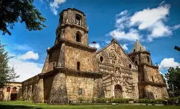

About the Miagao

Miagao is a first-class coastal municipality in the province of Iloilo, Philippines, located about 40 kilometers southwest of Iloilo City.
Key Facts
- Population: 68,163 residents (2024 population census).
- Land Area: 156.80 square kilometers across 119 barangays.
- Moniker: Known as the "Onion Capital of the Visayas".
- Accessibility: About a 40-minute bus, jeepney, or van ride from Iloilo City.
Landmarks and Heritage
- Miagao Church: Officially the Santo Tomás de Villanueva Parish Church, this 1797 fortress-church is a recognized UNESCO World Heritage Site famous for its intricate yellowish-brown sandstone facade and baroque architecture.
- Salakayan Festival: Held annually during the first week of February to commemorate local resistance against historic pirate raids.
- University of the Philippines Visayas (UPV): Hosts a major regional campus in town.